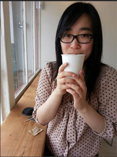

Hello!
I’m Cathleen, a UI/UX designer dedicated to helping people figure out what the heck is going on. I thrive on coffee and candy, and love being creative. In my spare time, I enjoy baking, drawing, jogging, circus arts, and playing video games.
Currently the place I call home is Fremont, CA; just a quick BART ride away from San Francisco! I love travelling and am open to new opportunities that allow me to. Feel free to contact me!